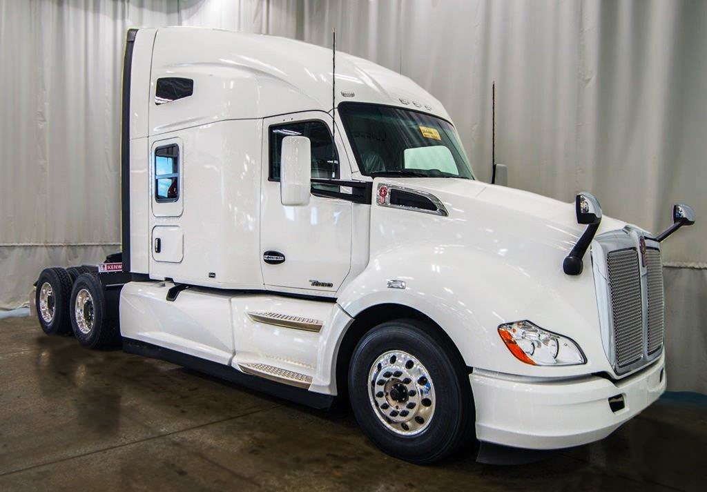
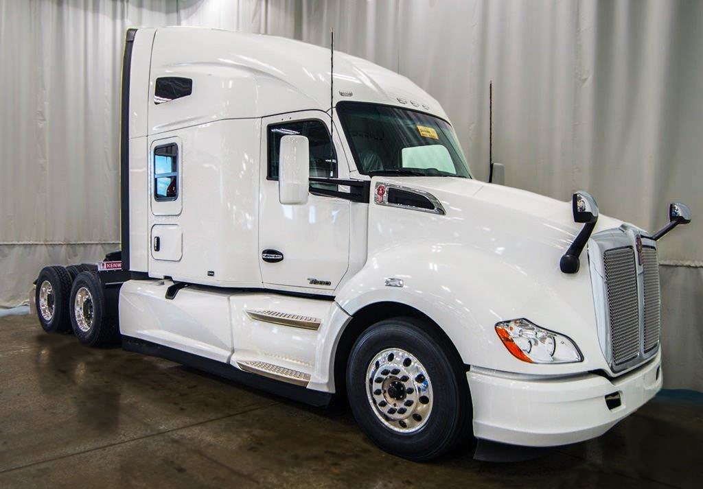
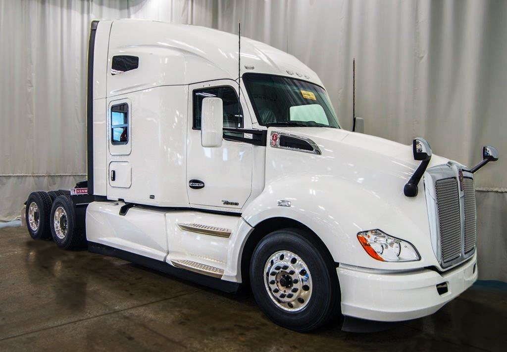
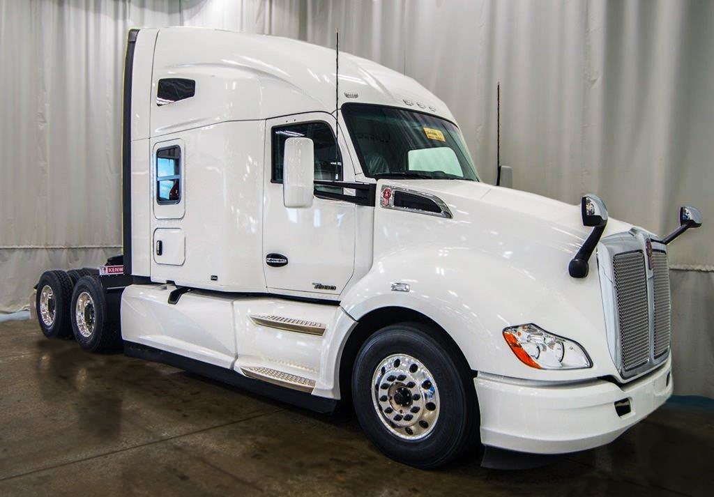

The Kenworth T600 is a model line of conventional-cab trucks that were produced by the American truck manufacturer Kenworth from 1984 to 2007. Distinguished by its aerodynamic sloped hood, the T600 was a Class 8 truck, typically sold in semitractor configuration. While aerodynamic devices (such as roof fairings) had been introduced on Class 8 trucks in the mid-1970s, the T600 was the first American semitractor designed from the ground up with aerodynamics and fuel economy in mind. Sharing design commonality with the Class 8 W900, the T600 differs from its counterpart largely with its set-back front axle, hood, and lower bodywork (with the Aerocab later adopted by the W900L).